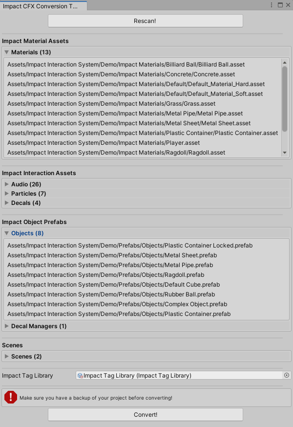

Conversion From Legacy Impact
Converting your project to use Impact CFX from legacy Impact requires a few steps:
- Convert Assets - Impact Material and Interaction assets will need to be re-created using their Impact CFX counterparts.
- Convert Components - Impact components will need to be replaced with their Impact CFX counterparts, and any references to assets will need to be updated.
- Convert Scripts - Any custom scripts that use the legacy Impact API will need to be updated.
This can be done manually, or you can use the Impact CFX Conversion Tool to automatically convert all assets and components in your project.
Latest Release: 19/01/2024
The conversion tool will not convert any custom scripts that use the Impact API or inherit from Impact components. You will need to convert these custom scripts yourself.
IT IS VERY IMPORTANT THAT YOU HAVE A BACKUP OF YOUR PROJECT BEFORE ATTEMPTING TO CONVERT!
Using the Impact CFX Conversion Tool
1) Import Impact CFX
Import Impact CFX into your project as normal. Impact CFX and legacy Impact can safely be in your project at the same time without any conflicts or errors.
2) Import the Impact CFX Conversion Tool
Import the Impact CFX Conversion Tool into your project.
3) Open the Impact CFX Conversion Tool Window
Open the Impact CFX Conversion Tool by going to .
First, click the Scan button scan your project for all Impact assets.
Once this is done, a listing of all Impact assets that were found will be shown. These lists are categorized by the kind of asset and show you the path for each asset. The conversion tool will also go into scenes and convert any components inside of scenes.
Make sure to carefully look over all of the assets listed here to make sure that they are correct.
There is also the Impact Tag Library field. This is the Impact Tag Library the conversion tool will use to convert your tag names into Impact CFX project settings.
When you are ready to proceed, click the Convert button. This may take some time, depending on the size of your project. The specific order of conversion is as follows:
- First, the Impact Tag Library you provided will be converted to Impact CFX project settings.
- New Audio, Particle, and Decal effect assets are created to match each corresponding Audio, Particle, or Decal interaction. The prefabs used by these interactions will have the new Impact CFX components added to them.
- New Impact CFX Material assets are created to match each corresponding Impact Material.
- An Impact Material Registry asset is created using the newly created materials from the previous step.
- All prefabs with Impact Object, Impact Trigger, or Impact Decal Manager components have the corresponding Impact CFX components added to them.
- Old Impact components are now deleted from the prefabs.
- Scenes are now opened and scanned for objects with Impact components, adding the corresponding Impact CFX components. The old Impact components are deleted when the scene conversion is finished, before saving the scene and loading the next scene.
- Once scene conversion is complete, all old Impact Material and Audio, Particle, or Decal interaction assets are deleted.
4) Test Conversion Results
All of your Impact assets and components will now be replaced with their Impact CFX counterparts, and should work without any further modifications. Make sure to thoroughly test your project to make sure everything works as expected. The console will also have a log of all assets and components that were converted.
5) Update custom scripts
You will need to manually update any scripts that use the Impact API, or any custom components that inherit from Impact components.
6) Remove Legacy Impact
Finally, you can remove legacy Impact from your project.